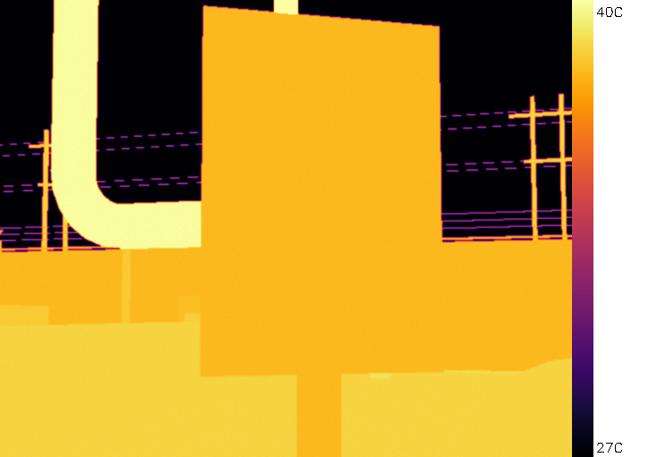
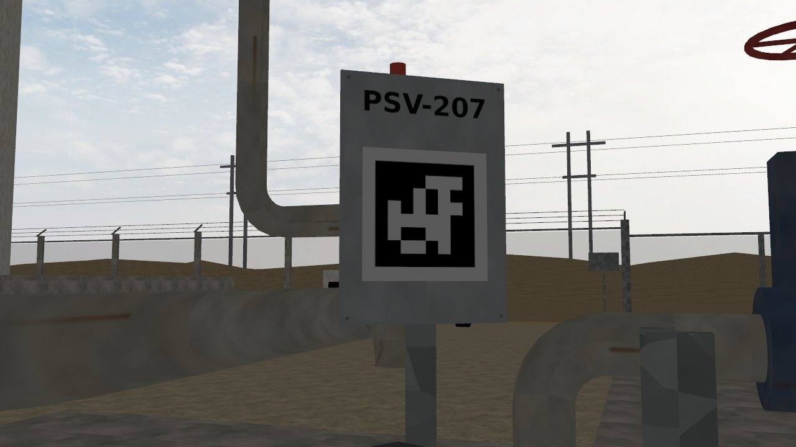
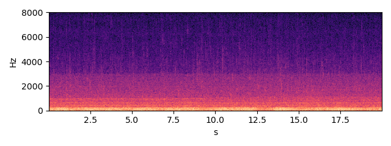

PSV-207 — spring-loaded pressure safety valve
Status none HI 0.97 RUL: not estimated (no degradation trend)
Health indicator per inspection round; vertical lines = maintenance log entries; red band = RUL estimate.
Inspection snapshots (robot camera and microphone)

thermal, aim 1, max 62.2 C (Gazebo round 2026-10-03 16:41)

RGB, aim 1

sound, aim 1 (dwell window)
Alarm history
| time | level | fused score | HI | reasons | work order |
|---|
Maintenance log (CMMS view)
| date | type | details |
|---|